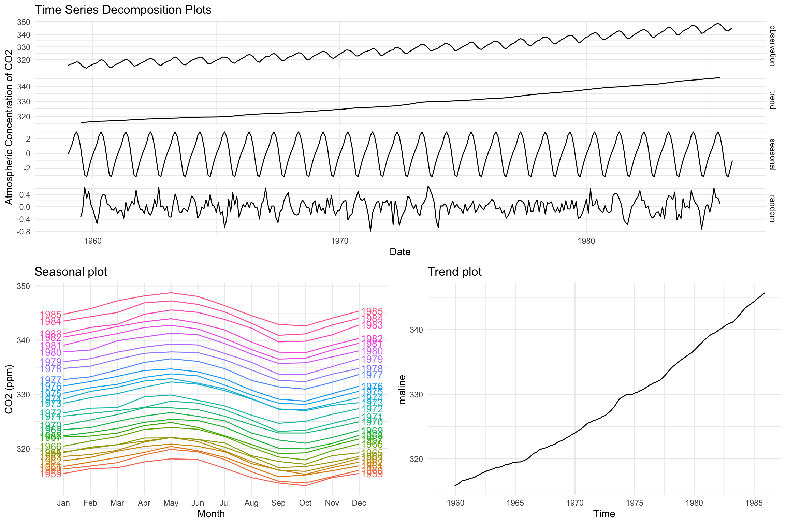
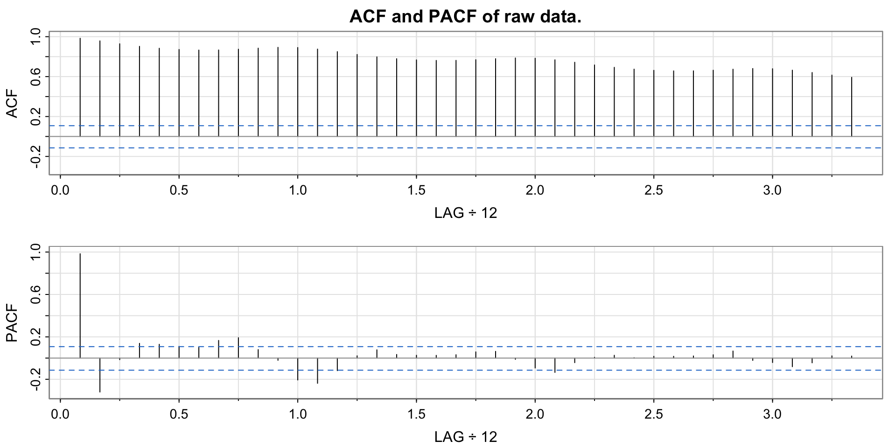
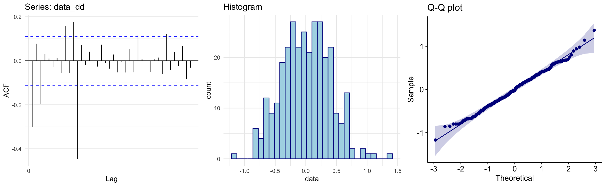
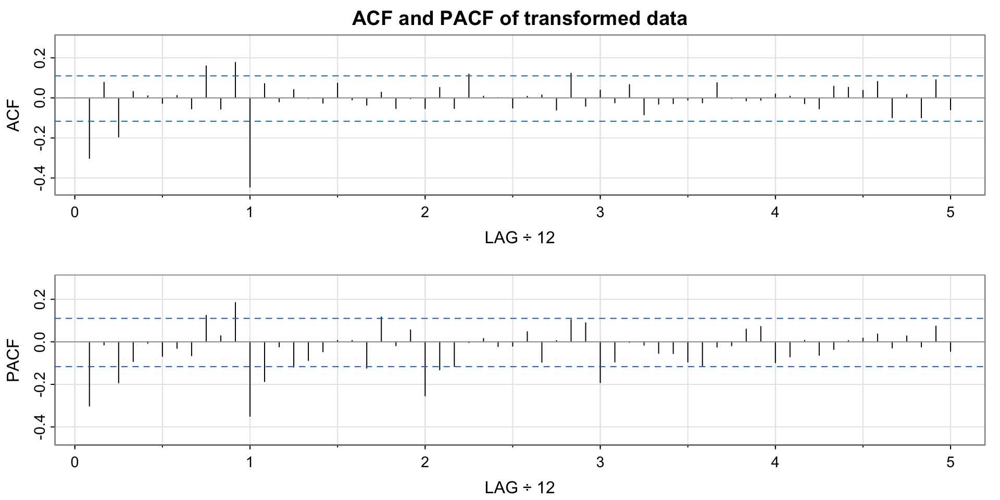
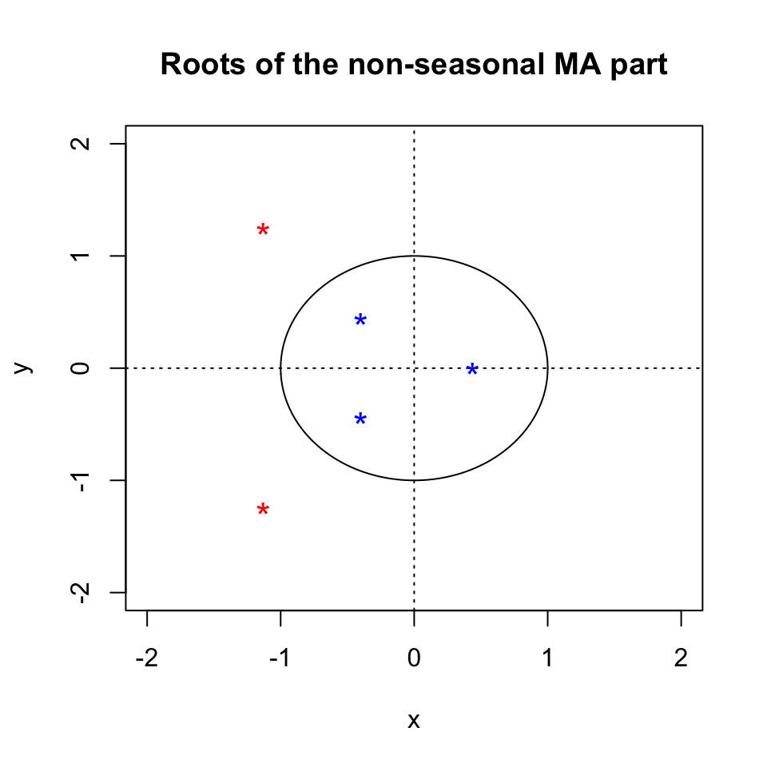
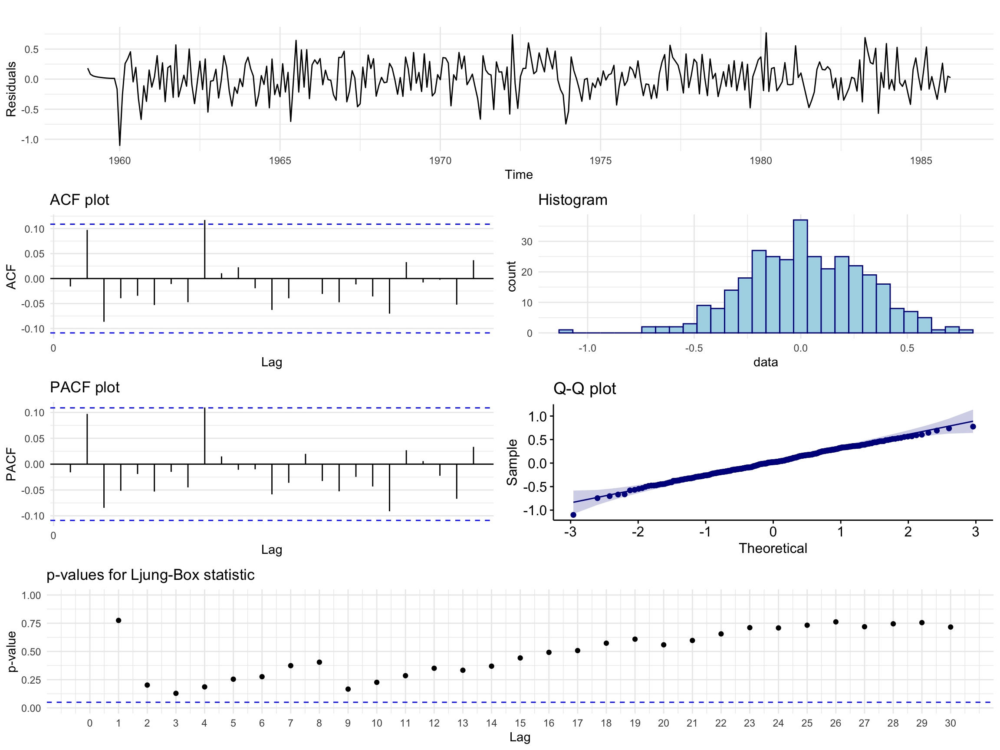
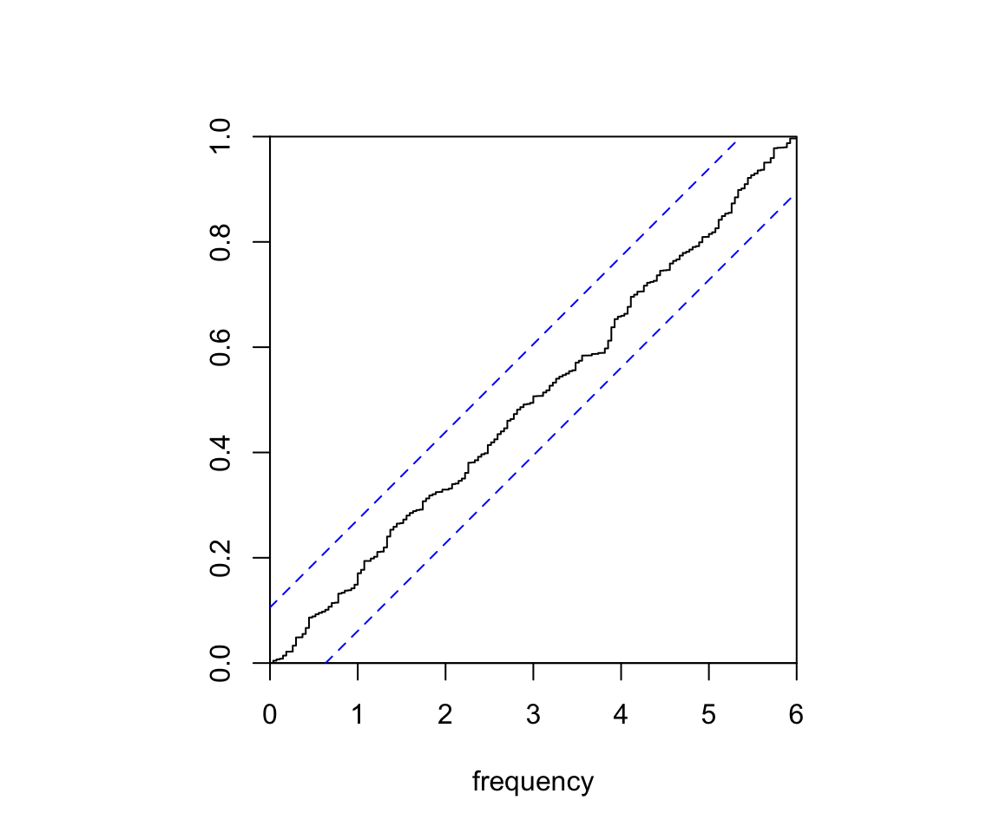

This page is a rework of a project completed for PSTAT 274 (Time Series Analysis) at the University of California Santa Barbara, taught by Prof. Raya Feldman (Spring 2023). The code behind every figure and table is available in the “Show code” blocks.
Abstract. We select and fit a Seasonal Autoregressive Integrated Moving Average (SARIMA) model to produce accurate five year ahead forecasts of atmospheric CO\(_2\) levels above Mauna Loa, Hawaii. We investigate the properties of the series, the suitability of SARIMA models, and whether the forecasts capture future observations. The analysis uses exploratory analysis, model selection with the adjusted Akaike Information Criterion (AICc), diagnostic checking, residual analysis and spectral analysis. Our first choice model, a SARIMA(0,1,3)(0,1,1)\(_{12}\), produced approximately Gaussian white noise residuals and accurate forecasts whose confidence intervals captured the true observed values.
2 Introduction
Many geophysical time series contain seasonal variation. A key example is atmospheric carbon dioxide (CO\(_2\)) concentration, which has an annual seasonal cycle - largely due to plant photosynthesis and respiration - superimposed on an increasing trend caused primarily by human CO\(_2\) production.
We examine monthly measurements of atmospheric CO\(_2\) above Mauna Loa, Hawaii over the 32 years from 1959 to 1990 (Brockwell and Davis 1996; Shumway and Stoffer 2011). The aim is a 5 year ahead forecast from a suitable SARIMA model. The workflow is:
Exploratory analysis: decomposition, stationarity transformations, autocorrelations and tests for normality and stationarity.
Model fitting and selection: stationarity and invertibility checks, coefficient significance and AICc.
Residual analysis: portmanteau tests, white noise tests and spectral analysis.
We find that the SARIMA(0,1,3)(0,1,1)\(_{12}\) model is the best candidate, and that its residuals, forecasts and spectral decomposition support its use. All analysis was performed in R.
3 Data
3.1 Description
The data are monthly measurements of atmospheric CO\(_2\) above Mauna Loa from January 1959 to December 1990, in parts per million (ppm). They were collected by the Scripps Institution of Oceanography, La Jolla, California and are available through the tsdl package (Hyndman and Yang 2019). Missing values in the raw data were filled by linear interpolation. The raw series \(x_t,~t=1,\dots,384\) has 384 observations.
Show code
# librarieslibrary(tsdl) # source for datalibrary(zoo) # rollmeanlibrary(ggplot2) # plots and figureslibrary(tidyr) # reshaping datalibrary(gridExtra) # multiple ggplotslibrary(forecast) # seasonal plot, Arimalibrary(tseries) # adf and kpss testslibrary(knitr) # tableslibrary(astsa) # acf2library(LSTS) # Ljung-Box plotlibrary(TSA) # periodogramlibrary(ggpubr) # qqplotlibrary(lmtest) # coeftestlibrary(ggplottimeseries) # time series decomposition# remotes::install_github("brisneve/ggplottimeseries")theme_set(theme_minimal())set.seed(8467)# plot the roots of an AR / MA polynomial against the unit circleplot.roots <-function(ar.roots =NULL, ma.roots =NULL, size =2,angles =FALSE, special =NULL, sqecial =NULL,my.pch =1, first.col ="blue", second.col ="red",main =NULL) { xylims <-c(-size, size) omegas <-seq(0, 2* pi, pi /500) temp <-exp(complex(real =rep(0, length(omegas)), imag = omegas))plot(Re(temp), Im(temp), typ ="l", xlab ="x", ylab ="y",xlim = xylims, ylim = xylims, main = main)abline(v =0, lty ="dotted")abline(h =0, lty ="dotted")if (!is.null(ar.roots)) {points(Re(1/ ar.roots), Im(1/ ar.roots), col = first.col, pch = my.pch)points(Re(ar.roots), Im(ar.roots), col = second.col, pch = my.pch) }if (!is.null(ma.roots)) {points(Re(1/ ma.roots), Im(1/ ma.roots), pch ="*", cex =1.5,col = first.col)points(Re(ma.roots), Im(ma.roots), pch ="*", cex =1.5, col = second.col) }if (angles) {if (!is.null(ar.roots)) {abline(a =0, b =Im(ar.roots[1]) /Re(ar.roots[1]), lty ="dotted")abline(a =0, b =Im(ar.roots[2]) /Re(ar.roots[2]), lty ="dotted") }if (!is.null(ma.roots)) {sapply(seq_along(ma.roots), function(j)abline(a =0, b =Im(ma.roots[j]) /Re(ma.roots[j]), lty ="dotted")) } }if (!is.null(special)) lines(Re(special), Im(special), lwd =2)if (!is.null(sqecial)) lines(Re(sqecial), Im(sqecial), lwd =2)}
Show code
# load the monthly CO2 series from the Time Series Data Librarytsdl_met <-subset(tsdl, 12, "Meteorology")rawdata <- tsdl_met[[2]]
3.2 Exploratory Analysis
We split the data into disjoint training and testing sets. The testing set contains the last 5 years (60 months) of observed CO\(_2\) and is used to assess the forecasts of the final model. The training set contains 324 observations.
Show code
data <-head(rawdata, n =length(rawdata) - (12*5))
Figure 1 shows the training data with a 12 month moving average. There is a clear increasing polynomial trend and a seasonal component with a 12 month period, so the raw data are non-stationary. The variance appears constant and there are no sharp changes in behaviour, which suggests a SARIMA model should suit the data.
Show code
# 12 month moving averagemaline <-rollmean(data, k =12, fill =NA, align ="right")plotdata <-data.frame("Time"=seq(as.Date("1959/1/1"), as.Date("1985/12/1"), "months"),"data"= data,"trend"= maline)plotdata %>% tidyr::gather("id", "value", 2:3) %>%ggplot(., aes(Time, value, col = id, linetype = id)) +geom_line() +theme_light() +labs(x ="Time", y ="CO2 (ppm)", color ="Legend", linetype ="Legend")
The decomposition in Figure 2 separates the seasonal and trend components. There is no evidence of heteroscedastic behaviour in the residuals, so we do not transform the data.
Show code
ts_decomp <-ggdecompose(dts2(data, type ="additive")) +xlab("Date") +ylab("Atmospheric Concentration of CO2") +ggtitle("Time Series Decomposition Plots")seasplot <-ggseasonplot(data, year.labels =TRUE, year.labels.left =TRUE) +ylab("CO2 (ppm)") +ggtitle("Seasonal plot") +theme_minimal()trendplot <-autoplot(maline, ts.color ="red", main ="Trend plot") +theme_minimal()grid.arrange(ts_decomp, seasplot, trendplot,layout_matrix =rbind(c(1, 1), c(2, 3)))

Figure 2: Time series decomposition, seasonal plot and trend plot.
The autocorrelation function (ACF) in Figure 3 shows highly significant autocorrelations for all lags up to 40, which decay slowly and show seasonality.
Show code
acf2(data, 40, main ="ACF and PACF of raw data.")

Figure 3: ACF and PACF of the raw data.
3.3 Differencing
We difference first with lag 12 to remove the seasonal component:
where \(B\) is the back-shift operator, \(B^kx_t = x_{t-k}\). Figure 4 shows that the seasonal pattern is gone but a linear trend remains, and the ACF decays slowly as is typical of data with a polynomial trend.
Figure 5: Time series plot of the differenced and seasonally differenced data.
The twice differenced data appear stationary, with no seasonality or trend and a stable variance. Each transformation lowered the variance of the data (Table 1).
Show code
var_table <-data.frame("Transformation"=c("None", "Differenced lag 12","Differenced lag 12 and lag 1"),"Variance"=c(var(data), var(data_d), var(data_dd)))kable(var_table)
Table 1: Variance of the data after each transformation.
Transformation
Variance
None
86.0367259
Differenced lag 12
0.3449074
Differenced lag 12 and lag 1
0.1577327
The ACF, histogram and Q-Q plot in Figure 6 show no remaining polynomial or seasonal trend, and an empirical distribution that is symmetric and approximately Gaussian.
Show code
acf_data_dd <-autoplot(acf(data_dd, lag =40, plot =FALSE))hist_data_dd <-ggplot(data.frame("data"= data_dd), aes(x = data)) +geom_histogram(color ="darkblue", fill ="lightblue") +ggtitle("Histogram")qqplot_data_dd <-ggqqplot(data_dd, color ="darkblue") +ggtitle("Q-Q plot")grid.arrange(acf_data_dd, hist_data_dd, qqplot_data_dd, ncol =3)

Figure 6: ACF, histogram and Q-Q plot of the twice differenced data.
Finally, we run two stationarity tests. The Augmented Dickey-Fuller (ADF) test has a unit root (and hence a trend) as its null, so a large p-value indicates a trend. The Kwiatkowski-Phillips-Schmidt-Shin (KPSS) test has trend stationarity as its null, so a small p-value indicates a unit root. Both conclude that the twice differenced data are trend stationary (Table 2).
Show code
adf_test <-adf.test(data_dd)kpss_test <-kpss.test(data_dd, null ="Trend")table_data <-data.frame(Test =c("ADF Test", "KPSS Test"),Null =c("Process has a unit root and therefore a trend.","Process is trend stationary"),pValue =c(signif(adf_test$p.value, 2), signif(kpss_test$p.value, 2)),Conclusion =c("Data is trend stationary", "Data is trend stationary"))kable(table_data)
Table 2: Trend stationarity test results.
Test
Null
pValue
Conclusion
ADF Test
Process has a unit root and therefore a trend.
0.01
Data is trend stationary
KPSS Test
Process is trend stationary
0.10
Data is trend stationary
4 Model Fitting
4.1 Parameter Selection
A SARIMA model has seven parameters: \(p, d, q, P, D, Q\) and \(s\). Since we differenced once at lag 1 and once at lag 12, we have \(d=1\), \(D=1\) and \(s=12\). To bound the AR parameters \(p, P\) and MA parameters \(q, Q\) we inspect the ACF and PACF of the differenced data (Figure 7).
Show code
acf2(data_dd, 60, main ="ACF and PACF of transformed data")

Figure 7: ACF and PACF of the transformed data.
Non-seasonal AR (\(p\)): the PACF has significant spikes at lags 1 and 3, so we may need up to \(p=3\). Spikes at lags 9 and 11 are likely interactions with the seasonal terms.
Non-seasonal MA (\(q\)): the ACF has significant spikes at lags 1 and 3, so we may need up to \(q=3\).
Seasonal AR (\(P\)): the PACF is significant at lags 12, 24 and 36, so we may need up to \(P=3\).
Seasonal MA (\(Q\)): the ACF is significant at lag 12 only, so we likely need \(Q=1\).
4.2 Model Selection
We fit, evaluate and compare models using the AICc. Since the AICc penalises large numbers of parameters, we start from the simplest models and add parameters with the aim of minimising the AICc. A full summary of every model considered is given in the appendix.
4.2.1 Pure Moving Average Models
We first fix \(p=P=0\) and find the best pure moving average model, with up to \(q=3\) and \(Q=1\). The two best models are below.
Show code
# SARIMA(0,1,3)(0,1,1)12model1 <-Arima(data, order =c(0, 1, 3),seasonal =list(order =c(0, 1, 1), period =12),method ="ML")# SARIMA(0,1,3)(0,1,1)12 with MA2 = 0model2 <-Arima(data, order =c(0, 1, 3),seasonal =list(order =c(0, 1, 1), period =12),method ="ML", fix =c(NA, 0, NA, NA))
Table 3: Best pure moving average models. AICc: 119.57 (left), 117.51 (right).
(a) SARIMA(0,1,3)(0,1,1)\(_{12}\)
Est
SE
z
p
ma1
-0.3562
0.0569
-6.2632
0.0000
ma2
0.0036
0.0614
0.0581
0.9537
ma3
-0.1570
0.0550
-2.8542
0.0043
sma1
-0.8385
0.0360
-23.2909
0.0000
(b) SARIMA(0,1,3)(0,1,1)\(_{12}\) with MA2 = 0
Estimate
Std. Error
z value
Pr(>|z|)
ma1
-0.3550
0.0531
-6.6804
0.0000
ma3
-0.1560
0.0521
-2.9923
0.0028
sma1
-0.8384
0.0360
-23.2972
0.0000
The MA(2) coefficient of the first model is insignificant, so we fix it to zero and refit. This lowers the AICc from 119.57 to 117.51 and leaves all coefficients significant, making it our top pure MA model.
4.2.2 Autoregressive Terms
We next test whether AR terms reduce the AICc by more than their penalty. The two best candidates are below.
Show code
# SARIMA(1,1,1)(0,1,1)12modelB <-Arima(data, order =c(1, 1, 1),seasonal =list(order =c(0, 1, 1), period =12),method ="ML")# SARIMA(3,1,1)(0,1,1)12 with AR1 = AR2 = 0armodel2 <-Arima(data, order =c(3, 1, 1),seasonal =list(order =c(0, 1, 1), period =12),method ="ML", fixed =c(0, 0, NA, NA, NA))
Table 4: Best models with autoregressive terms. AICc: 123.37 (left), 119.96 (right).
(a) SARIMA(1,1,1)(0,1,1)\(_{12}\)
Estimate
Std. Error
z value
Pr(>|z|)
ar1
0.3446
0.1514
2.2770
0.0228
ma1
-0.6753
0.1232
-5.4823
0.0000
sma1
-0.8391
0.0356
-23.5934
0.0000
(b) SARIMA(3,1,1)(0,1,1)\(_{12}\) with AR1 = AR2 = 0
Estimate
Std. Error
z value
Pr(>|z|)
ar3
-0.1385
0.0566
-2.4480
0.0144
ma1
-0.3468
0.0558
-6.2132
0.0000
sma1
-1.1964
0.0522
-22.9296
0.0000
Adding seasonal AR terms typically increased the AICc and rarely gave significant coefficients. The SARIMA(1,1,1)(0,1,1)\(_{12}\) model performs reasonably well, with all coefficients significant and an AICc of 123.37. The SARIMA(3,1,1)(0,1,1)\(_{12}\) model with AR1 = AR2 = 0 has the second best AICc (119.96) but is not viable, since the absolute value of its seasonal MA coefficient is greater than 1. We therefore take the SARIMA(1,1,1)(0,1,1)\(_{12}\) model as our second candidate.
where \(Z_t\) is white noise (WN) with \(\mathbb{E}Z_t=0\) and \(\operatorname{Var}(Z_t)=\sigma_Z^2\).
Model (A) is pure moving average, so it is always stationary. In Figure 8 all MA roots lie outside the unit circle and \(|\Theta_1|<1\), so the model is invertible. Model (B) is invertible since \(|\theta_1|<1\) and \(|\Theta_1|<1\), and stationary since \(|\phi_1|<1\).
Show code
# final modelsfinalmodel1 <-Arima(data, order =c(0, 1, 3),seasonal =list(order =c(0, 1, 1), period =12),method ="ML", fix =c(NA, 0, NA, NA))finalmodel2 <-Arima(data, order =c(1, 1, 1),seasonal =list(order =c(0, 1, 1), period =12),method ="ML", fixed =c(NA, NA, NA))plot.roots(NULL, polyroot(c(1, 0.354998, 0, -0.155974)),main ="Roots of the non-seasonal MA part")

Figure 8: Model (A): roots of the non-seasonal MA polynomial.
5 Diagnostic Checking
For each candidate we plot the residuals alongside their ACF, PACF, histogram, Q-Q plot and Ljung-Box statistics, then run a set of residual tests. The helper below builds both for a fitted model.
Show code
# residual diagnostic plots for a fitted modelresid_plots <-function(fit) { r <- fit$residualsgrid.arrange(autoplot(r, ylab ="Residuals"),autoplot(acf(r, plot =FALSE)) +ggtitle("ACF plot"),ggplot(data.frame("data"= r), aes(x = data)) +geom_histogram(color ="darkblue", fill ="lightblue") +ggtitle("Histogram"),autoplot(pacf(r, plot =FALSE)) +ggtitle("PACF plot"),ggqqplot(r, color ="darkblue") +ggtitle("Q-Q plot"),Box.Ljung.Test(r, lag =30),layout_matrix =rbind(c(1, 1), c(2, 3), c(4, 5), c(6, 6)) )}# residual tests for a fitted modelresid_tests <-function(fit) { r <- fit$residuals sw <-shapiro.test(r) bp <-Box.test(r, lag =18, type ="Box-Pierce", fitdf =3) lb <-Box.test(r, lag =18, type ="Ljung-Box", fitdf =3) lbs <-Box.test(r^2, lag =18, type ="Ljung-Box", fitdf =0)data.frame("Test"=c("Shapiro-Wilk", "Box-Pierce", "Ljung-Box","Ljung-Box (squared)"),"p-value"=c(sw$p.value, bp$p.value, lb$p.value, lbs$p.value),"Conclusion"=c("Normal", "Independence","No autocorrelation in residuals","No autocorrelation in squared residuals") )}
5.1 Model (A)
Show code
resid_plots(finalmodel1)
Figure 9: Model (A): residual analysis plots.
The residuals show the characteristics of white noise, with no trend, seasonality or conditional heteroscedasticity. The ACF and PACF show no significant spikes up to lag 25, apart from a borderline spike at lag 9. Bar a lower outlier, the histogram and Q-Q plot are consistent with a Gaussian distribution. The Ljung-Box p-values are not significant at any lag up to 30.
Show code
kable(resid_tests(finalmodel1))
Table 5: Model (A): residual test results.
Test
p.value
Conclusion
Shapiro-Wilk
0.3162723
Normal
Box-Pierce
0.8187969
Independence
Ljung-Box
0.7928839
No autocorrelation in residuals
Ljung-Box (squared)
0.7703434
No autocorrelation in squared residuals
Model (A) passes all four tests.
5.2 Model (B)
Show code
resid_plots(finalmodel2)

Figure 10: Model (B): residual analysis plots.
The residual behaviour is similar, with borderline spikes at lags 2 and 9 and a slightly heavier tailed distribution than Model (A). No Ljung-Box p-values are significant, but they are much closer to the rejection region than for Model (A).
Show code
kable(resid_tests(finalmodel2))
Table 6: Model (B): residual test results.
Test
p.value
Conclusion
Shapiro-Wilk
0.5001295
Normal
Box-Pierce
0.3947198
Independence
Ljung-Box
0.3639211
No autocorrelation in residuals
Ljung-Box (squared)
0.7121532
No autocorrelation in squared residuals
Model (B) also passes all four tests.
Both models pass diagnostic checking. Because of the slight edge in the residual analysis of Model (A) and its lower AICc, we select Model (A) as the final model. It is also simpler than our initial speculation from the ACF and PACF, so the AICc procedure kept the model parsimonious.
6 Forecasting
Our final model is the SARIMA(0,1,3)(0,1,1)\(_{12}\) model with the MA2 coefficient fixed at 0:
Figure 12: Forecast with the observed test data overlaid.
The forecast was successful. The observed values lie inside the confidence region throughout the five year window. Between 1988 and 1990 the forecast lags below the observed values, which approach the upper bound before returning close to the forecast by the end of 1990. Despite the large (and somewhat impractical) forecasting window, the forecast was accurate.
7 Spectral Analysis
We first compute periodograms of the undifferenced data and of the residuals of the final model (Figure 13).
Figure 13: Periodograms of the data (left) and the final model residuals (right).
The periodogram of the data has a spike near \(0.08\approx 1/12\), matching the 12 month period seen in the seasonal plot. The periodogram of the residuals has no dominant frequency, so no significant seasonality remains.
Fisher’s test detects hidden periodicities of unspecified frequency in the residuals. Its null hypothesis is Gaussian white noise.
The p-value is above 0.05, so there is insufficient evidence to reject Gaussian white noise. A second test is the Kolmogorov-Smirnov test, which we apply through the cumulative periodogram of the residuals (Figure 14). The cumulative periodogram stays inside the confidence band for all frequencies, so the residuals pass this test too.
Show code
cpgram(finalmodel1$residuals, main ="")

Figure 14: Cumulative periodogram of the final model residuals.
8 Conclusion
We determined and fitted a model that gives accurate forecasts of monthly atmospheric CO\(_2\) above Mauna Loa, Hawaii (January 1959 to December 1990). Exploratory analysis revealed a linear trend and a 12 month seasonal pattern, both removed by differencing. We fitted a range of SARIMA models and chose the best by AICc and then by residual analysis. The final model is the SARIMA(0,1,3)(0,1,1)\(_{12}\) model with MA2 fixed at 0.
Its 60 month forecast contained all future observations within the confidence region. Spectral analysis supports the choice, with residuals that are consistent with Gaussian white noise and no remaining seasonality.
9 Appendix
9.1 Summary of Fitted Models
Standard errors are omitted. Significance codes: *** 0.001, ** 0.01, * 0.05, . 0.1.
Pure MA models
Model
ma1
ma2
ma3
sma1
AICc
SARIMA(0,1,1)(0,1,0)12
-0.344551***
279.55
SARIMA(0,1,0)(0,1,1)12
-0.889574***
154.53
SARIMA(0,1,2)(0,1,0)12
-0.345986***
-0.046864
280.87
SARIMA(0,1,1)(0,1,1)12
-0.353020***
-0.841135***
123.84
SARIMA(0,1,3)(0,1,0)12
-0.325178***
0.013010
-0.216530***
270.05
SARIMA(0,1,2)(0,1,1)12
-0.353873***
-0.046164
-0.838575***
125.30
SARIMA(0,1,3)(0,1,1)12
-0.356176***
0.003566
-0.157014**
-0.838478***
119.57
SARIMA(0,1,3)(0,1,0)12 (MA2=0)
-0.321529***
0
-0.213898***
268.05
SARIMA(0,1,3)(0,1,1)12 (MA2=0)
-0.354998***
0
-0.155974**
-0.838438***
117.51
ARMA models
Model
ar1
ar2
ar3
ma1
ma2
ma3
sar1
sma1
AICc
SARIMA(1,1,1)(0,1,1)12
0.344624*
-0.675336***
-0.839105***
123.37
SARIMA(0,1,1)(1,1,1)12
-0.356868***
-0.031260
-0.831075***
125.69
SARIMA(1,1,3)(0,1,1)12 (MA2=0)
0.025502
-0.376771**
0
-0.152454**
-0.838529***
119.55
SARIMA(3,1,3)(0,1,1)12 (MA2=0)
0.660242
0.234948
-0.269463
-1.007236*
0
0.193135
-0.846110***
123.10
SARIMA(3,1,1)(0,1,1)12
0.370575*
0.139399.
-0.103047
-0.722425***
-0.841411***
121.15
SARIMA(3,1,1)(0,1,1)12 (AR1=AR2=0)
0
0
-0.138542*
-0.346842***
-1.196394***
119.96
10 References
Brockwell, Peter J., and Richard A. Davis. 1996. Introduction to Time Series and Forecasting. Springer.
Hyndman, Rob J., and Yangzhuoran Yang. 2019. Tsdl: Time Series Data Library.
Shumway, Robert H., and David S. Stoffer. 2011. Time Series Analysis and Its Applications: With r Examples. 3rd ed. Springer.